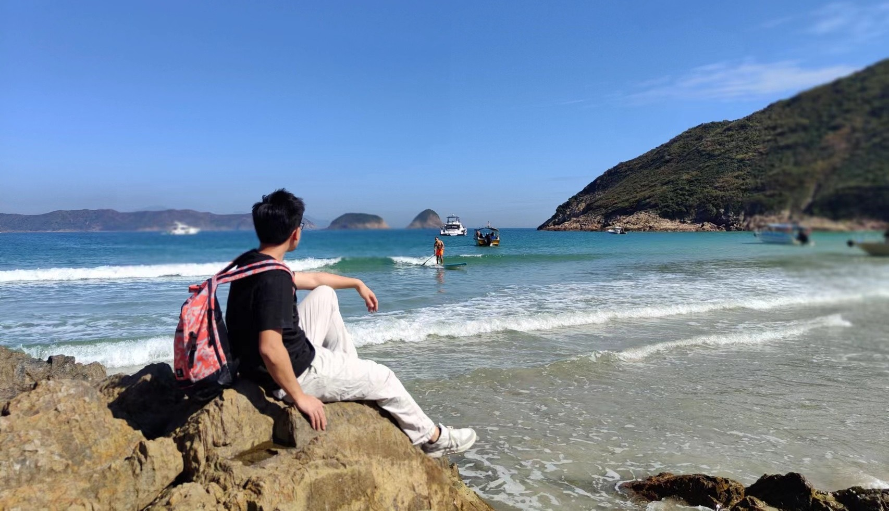
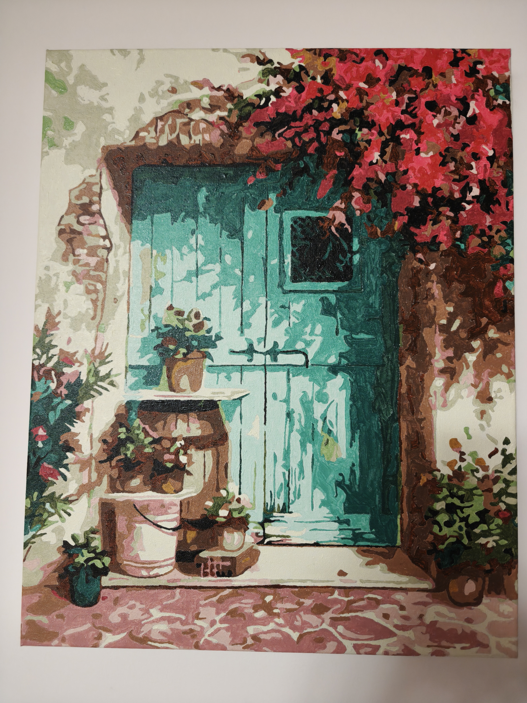
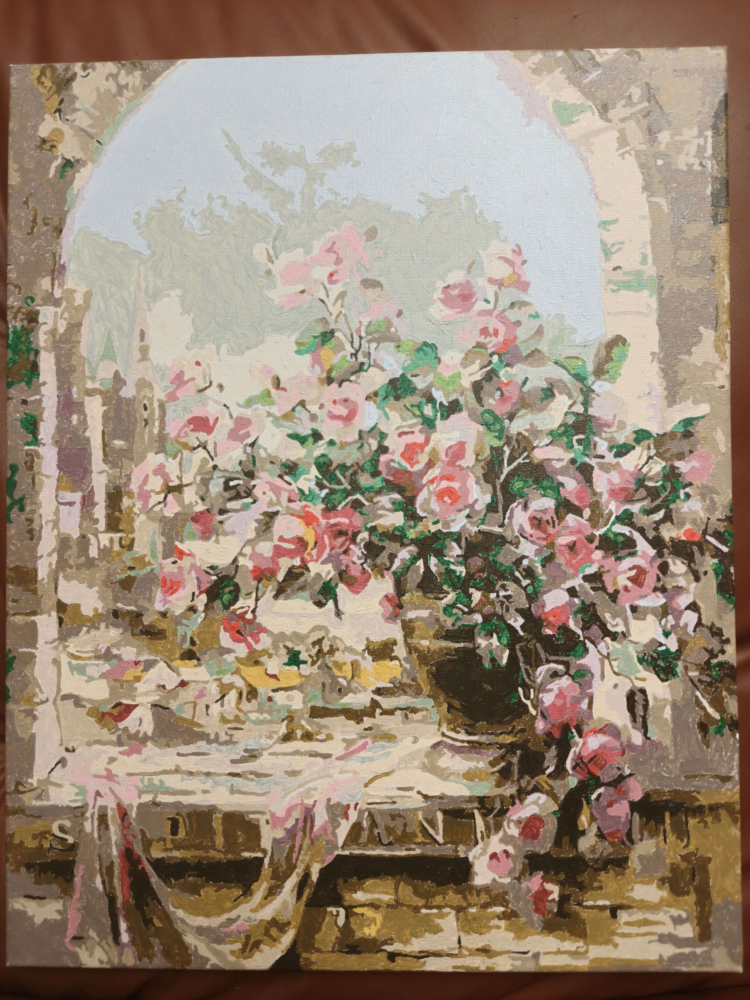

Mengtang Li, Ph.D.
-
Associate Prof, School of Intelligent Systems Engineering
Sun Yat-Sen University, Shenzhen, CN
Email: limt29@mail.sysu.edu.cn
Office: Room 610, Engineering Build Complex 1, Shenzhen Campus of Sun Yat-Sen University, Shenzhen, CN
Education Experience
-
2018-2020: Visiting Scholar with the Sarver Heart Center, University of Arizona, Tucson, AZ, USA
- Advisor: Marvin Slepian (Univ of Arizona), Co-advisor: Danny Bluestein (Stony Brook Univ)
- Advisor: Eric Barth
- Ph.D. committee: Michael Goldfarb (Vanderbilt Univ), Marvin Slepian (Univ of Arizona), Kim Stelson (Univ of Minnesota), Andrea Vacca (Purdue Univ)
- TA'ed for Nabil Samaan, ME 2160: Computer Graphics & Design
- TA'ed for Michael Goldfarb, ME 3120: Mechatronics
- Advisor: Richard Peters
- M.S. committee: Kazuhiko Kawamura (Vanderbilt Univ), Mitch Wilkes (Vanderbilt Univ)
- TA'ed for Kazuhiko Kawamura, EE 3060: Control Systems
- TA'ed for Richard Peters, EE 2970: Image Processing & Computer Vision
Research Interests
-
My current research interestes are listed as follows and welcome any undergrad and grad students who are interested in Robotics:
1. MRI-Compatible Surgical Robotic System: Design, Modeling, and Control.
2. MIS Percutaneous Intervention Surgical Robotic System: Design, Modeling, and Control.
3. Laparoscopic Robotic System: Design, Modeling, and Control.
4. MCS System (TAH and VAD): Design, In-silico and In-vitro Evaluation.
5. Advanced Human-machine Interaction: Eye-Gaze-based, Motion-based.
Honors and Awards
-
1. Foundation for Shenzhen Science and Technology Program - General Research Award, 2024.
2. National Natural Science Foundation of China - Young Researcher Award, 2023.
3. Guangdong Basic and Applied Basic Research - Young Researcher Award, 2022.
4. Foundation for Shenzhen Science and Technology Program - Excellent PhD Career Starting Award, 2021.
5. Overseas High-Caliber Personnel Level C, Shenzhen, 2020.
6. "Hundred-Talent", Sun Yat-Sen University, 2020.
7. Doris Griswold Heart Award, Sarver Heart Center, Univ of Arizona, 2019.
8. Discovery Pilot Award, Vanderbilt Univ Medical Center, 2019.
9. Multiple Conference Travel Awards (e.g. Vandy ME Dept., ASME-DSCC, ISMCS, ASAIO, etc), 2014-2020.
10. Full scholarship for graduate program at Vanderbilt Univ, 2014-2020.
Teaching
-
1. Fundamentals of Robotics, ISE202
2. Lab Experiments of Robotics, ISE357
3. CAD, ISE276
4. Software Engineering, ISE300
5. Independent Study, ISE3110
6. Advanced Robotics, ISE6246
Services
-
1. Member of IEEE, ASME.
2. Editorial Member of Nature Springer - Scientific Report (JCR Q1, Link).
3. Leading Guest Editor of Internation Journal: Mathematics (JCR Q1, Link).
4. Leading Guest Editor of Internation Journal: Frontiers in Robotics and AI (JCR Q2, Link).
5. Panel Chair of 2022 Global Fluid Power Society PhD Symposium (GFPS).
6. Program Committee Member & Tech Chair of 2023/2024/2025 International Conference on Frontiers of Robotics and Software Engineering (FRSE).
7. Reviewer for IEEE TMECH, Elsevier Measurement, Sage IMechE Part C/H/I, etc.

As a Mech, I love CAD/PCB Design, Prototype Building and all the Lab stuff.
As an Artest, I love Oil Painting, Gardening, Tennis, Skiing, and Hiking.
Oil Paintings
Painting is one of my favorite hobbies outside robotics. I enjoy creating landscapes, city scenes, and floral compositions inspired by places I have visited and the beauty of nature. Below are some of my recent oil paintings (Try to Click each!).
{kind=link}
{kind=link}
{kind=link}
{kind=link}

Behind the Turquoise Door
Oil on Canvas
Rustic Door beneath Bougainvillea, Tucson, AZ, USA
2022
{kind=link}

The Castle's Spring
Oil on Canvas
Castle Window with Blooming Roses, Munich, Germany
2021
{kind=link}
- © 2025 Copyright Mengtang Li